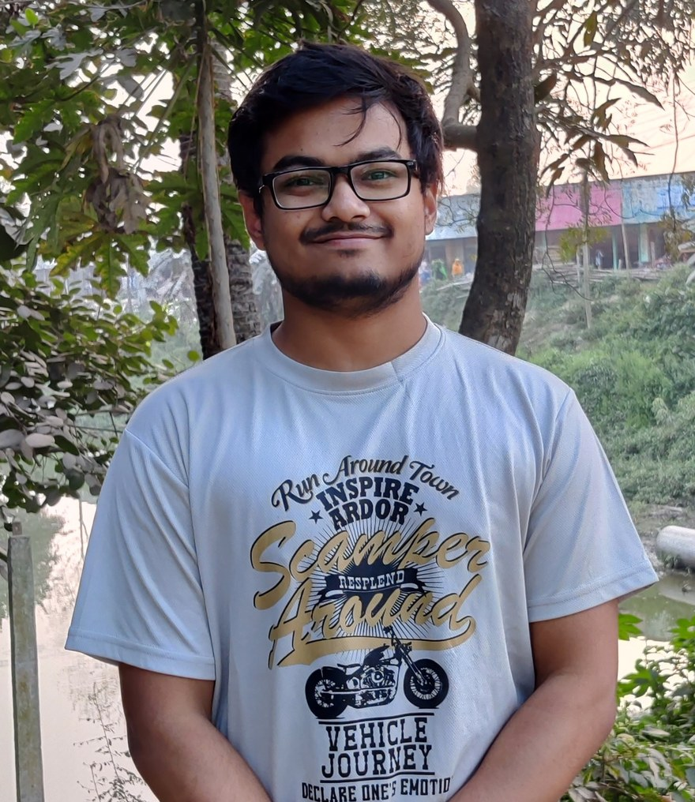

01 Research area
{ AI / agent }
Coding agents & evaluation
Code-executing AI agents
Studying failures in coding agents that use tools and execute code, including problems involving frameworks, execution environments, and missing observations.
Hello, I'm Fazle Rabbi.
I am a Ph.D. student in Software Engineering at Concordia University. My work includes software analysis, empirical studies, and applications of AI in software development.

I am a Ph.D. student in Software Engineering at Concordia University, supervised by Prof. Jinqiu Yang. My research is in software engineering, with a focus on empirical studies and AI-assisted software development.
My work has included code generation, code translation, program repair, software testing, and the evaluation of coding agents. I develop experiments, benchmarks, and tools to study how these methods perform across different tasks and programming languages.
Before starting my Ph.D., I worked at Samsung R&D Institute Bangladesh on software infrastructure, static analysis, code quality tools, and CI/CD workflows.
Examples of my work in software engineering and AI-assisted development.
Studying failures in coding agents that use tools and execute code, including problems involving frameworks, execution environments, and missing observations.
A multi-agent approach to translating code between programming languages, combining translation, specification alignment, testing, and iterative repair.
Read preprint ↗Evaluating how changes to prompts or code affect language models used for code generation and automated program repair.
Collaborative studies of social bias and security issues in generated code, including methods for identifying and addressing these issues.
Published papers, preprints, and manuscripts. Manuscripts are listed separately from peer-reviewed publications.
Journal of Systems and Software · JSS
* Equal contribution · † Corresponding author
Empirical Software Engineering · EMSE
Empirical Software Engineering · EMSE
ACM International Conference on AI-Powered Software · AIware
ACM International Conference on AI-Powered Software · AIware
International Conference on Predictive Models and Data Analytics in Software Engineering · PROMISE
AAAI Conference on Artificial Intelligence · AAAI
International Conference on AI Engineering · CAIN
Software Engineering and Knowledge Engineering · SEKE
International Conference on Program Comprehension · ICPC
Software Engineering and Knowledge Engineering · SEKE
arXiv preprint · Manuscript
arXiv preprint · Manuscript
No publications match that search. Try another keyword or filter.
* Equal contribution. † Corresponding author. Preprints and manuscripts are shown separately from peer-reviewed publications.
Tutorials, labs, project support, and assessment at Concordia University.
Led tutorials and lab sessions; evaluated assignments and exams.
Supported team-based development as stakeholder, project manager, and tutorial instructor.
Delivered tutorial and laboratory support, assessed team projects, and marked student work.
Evaluated course assessments and programming assignments.
Concordia University · Montréal, Canada
Conduct empirical software engineering research, build experimental tools and benchmarks, and collaborate on projects in code generation, translation, testing, and program repair.
Samsung R&D Institute Bangladesh · Dhaka, Bangladesh
Built Jenkins CI/CD pipelines, internal static analysis and software metric tools, and code quality monitoring workflows to support engineering teams.
Samsung R&D Institute Bangladesh · Dhaka, Bangladesh
Worked on an Android-based file sharing project, including Android components and network protocols such as SMB and NetBIOS.
Research affiliations, mentoring, peer review, and conference involvement.
Research member at Concordia University, with work related to software engineering, testing, and automated repair.
Trainee in the Software Engineering for AI-Based Systems program; completed a research visit to Polytechnique Montréal in 2024.
Former research member at the Institute of Information Technology, University of Dhaka, during undergraduate and master's studies.
SANER 2027 · Tool Demonstration Track
Reviewer for ACM Transactions on Software Engineering and Methodology, Empirical Software Engineering, and Journal of Systems and Software.
Mentored two research interns (2023 and 2026), supporting their development through collaborative software engineering research.
Student volunteer, SANER 2025.
For research collaborations or professional inquiries, you can reach me by email or LinkedIn.